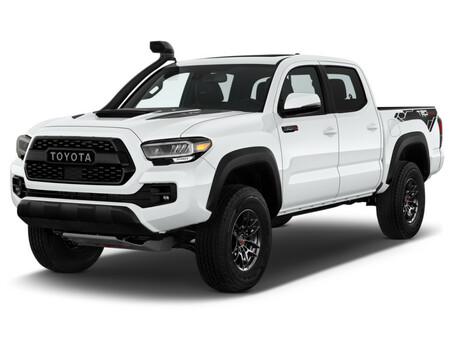

this is my car show room where i view 4 different cars manufactures and each manufacturer have 6 models and thats mean wish mean we have 24 different cars to choose between
Toyota Corolla is a front wheel drive 5 door with 5 seats, powered by a 2.0L INLINE 4 engine that has 125 kW of power (at 6600 rpm) and 200
Nm of torque (at 4400 rpm) via a Continuous Variable .....More Info
Toyota GR86 would very possibly be the big winner.
This eminently entertaining rear-wheel drive coupe’s
second generation arrived in 2022 and addressed the big issue we had with the original model..... More Info
Toyota Camry shares a nameplate with the generations that came before, but its extroverted styling
and performance model make it almost unrecognizable. That's because the current Camry
..... More Info
Toyota RAV4 There are good reasons why the RAV4 is a perennial bestseller for
Toyota—it's a practical and efficient SUV that appeals to your common sense.
The 2023 RAV4 continues the tradition.... More Info
Toyota Highlander has plenty to offer, but in a brutally competitive mid-size SUV segment of more than two dozen vehicles it’s only a mid-pack player.
There are eleven trims to choose from. Hybrid or nonhybrid powertrains....
More Info

Toyota Tacoma is terrific for work duties and fantastic for off-roading, but its small interior and driving manners are less refined than most other mid-size pickups. While it's the only one that still offers a manual transmission
.... More Info